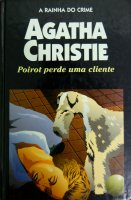

Poirot Perde uma Cliente
Dumb Witness
Todos responsabilizaram o acidente que Emily sofreu na escada a seu cachorro, um terrier. O mais que Emily pensava sobre o acidente, mais ela se convencia que alguém da sua família tentava matá-la. Assim, no dia 21 de Abril, ela escreve uma carta a Hercule Poirot contanto suas suspeitas. Misteriosamente ele não recebe a carta até o dia 28 de Junho, quando ela já estava morta.